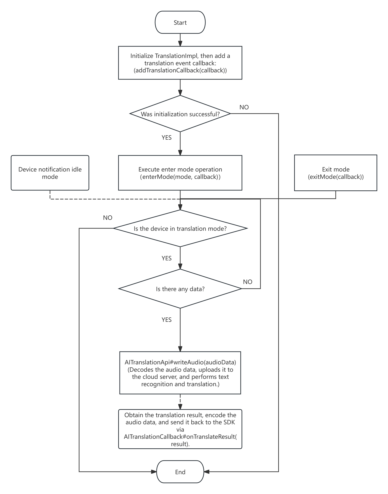

23. Translation Function
Function implementation class name: TranslationImpl
23.1. Initialize Translation Function
Important
Must wait for initialization result callback to succeed before operating interface
23.1.1. Initialize through AI Cloud Translation Agent Implementation
TranslationImpl translationImpl = null;
final RcspOpImpl rcspOp = RCSPController.getInstance().getRcspOp();
translationImpl = new TranslationImpl(rcspOp, new CustomAITranslation());
boolean isSupportTranslation = translationImpl.isSupportTranslation();
if(!isSupportTranslation){ //Translation function not supported
translationImpl.destroy();
translationImpl = null;
return;
}
//Add translation event callback
translationImpl.addTranslationCallback(new TranslationCallback() {
@Override
public void onModeChange(@NonNull BluetoothDevice device, @NonNull TranslationMode mode) {
//Callback translation mode change
}
@Override
public void onReceiveAudioData(@NonNull BluetoothDevice device, @NonNull AudioData audioData) {
//Callback received audio data
}
@Override
public void onError(BluetoothDevice device, int code, String message) {
//Callback error event
}
});
Note
Recommended implementation method
Custom AI Cloud Translation Agent
public static class CustomAITranslation implements IAITranslationApi {
private AITranslationCallback translationCallback;
/**
* OPUS decoder
*/
private OpusManager opusDecoder;
/**
* OPUS encoder
*/
private OpusManager opusEncoder;
/**
* Is translating
*/
private boolean isWorking = false;
/**
* Current translation mode information
*/
private TranslationMode currentMode;
@Override
public boolean isWorking() {
return isWorking;
}
@Override
public void startTranslating(@NonNull TranslationMode mode, @NonNull AITranslationCallback callback) {
//Perform AI cloud translation task according to translation mode information
currentMode = mode;
translationCallback = callback;
isWorking = true;
initOpusEncoder();
startOpusDecode();
}
@Override
public void stopTranslating() {
//Stop translation
destroyOpusEncoder();
stopOpusDecode();
currentMode = null;
translationCallback = null;
isWorking = false;
}
@Override
public void writeAudio(@NonNull AudioData audioData) {
//Need to perform translation task according to audio source
//e.g.: call translation, has uplink data and downlink data
final TranslationMode mode = currentMode;
if (mode == null) return;
if (mode.getMode() == TranslationMode.MODE_CALL_TRANSLATION) {
if (audioData.getSource() == AudioData.SOURCE_E_SCO_UP_LINK) { //Uplink data
//Decode uplink data
} else if (audioData.getSource() == AudioData.SOURCE_E_SCO_DOWN_LINK) { //Downlink data
//Decode downlink data
}
} else {
//Decode data
}
}
private void startOpusDecode() {
if (null == opusDecoder) {
try {
opusDecoder = new OpusManager();
} catch (OpusException e) {
e.printStackTrace();
}
}
final OpusManager decoder = opusDecoder;
if (decoder != null) {
if (decoder.isDecodeStream()) {
decoder.stopDecodeStream();
}
decoder.startDecodeStream(new OnDecodeStreamCallback() {
@Override
public void onDecodeStream(byte[] bytes) {
//Decode successful (streaming)
//Upload streaming PCN data to AI cloud for semantic analysis and translation
//Encode translation result TTS audio into OPUS data, then callback to SDK via AITranslationCallback#onTranslateResult(result)
}
@Override
public void onStart() {
//Decode start
}
@Override
public void onComplete(String path) {
//Decode end
}
@Override
public void onError(int code, String message) {
//Decode failed
}
});
}
}
private void stopOpusDecode() {
final OpusManager decoder = opusDecoder;
if (null == decoder) return;
if (decoder.isDecodeStream()) {
decoder.stopDecodeStream();
}
opusDecoder = null;
}
private void initOpusEncoder() {
if (null == opusEncoder) {
try {
opusEncoder = new OpusManager();
} catch (OpusException e) {
e.printStackTrace();
}
}
}
private void destroyOpusEncoder() {
if (null != opusDecoder) {
opusEncoder.release();
}
opusEncoder = null;
}
private void pushTranslationResult(byte[] ttsData) {
final OpusManager encoder = opusEncoder;
if (null == encoder) return;
//Save TTS data as TTS file, omitted
encoder.encodeFile(
"Your TTS file save path(xxx.pcm)", //Only accepts PCM file
"Encoding output file path(xxx.opus)",
new OnEncodeStreamCallback() {
@Override
public void onEncodeStream(byte[] bytes) {
//Callback encoding data (streaming)
}
@Override
public void onStart() {
//Callback encoding start
}
@Override
public void onComplete(String path) {
//Callback encoding successful
if (null == path) return;
byte[] opusData = readFileData(path);
if (opusData.length == 0) return;
//Construct translation result data
AudioData audioData = new AudioData(
AudioData.SOURCE_DEVICE_MIC,
Constants.AUDIO_TYPE_OPUS,
opusData
);
//Notify SDK to send data
if (null != translationCallback) {
translationCallback.onTranslateResult(
new TranslationResult()
.setId(1) //Translation task number
.setTranslationTTSData(audioData)
);
}
}
@Override
public void onError(int code, String message) {
//Callback encoding failed
}
});
}
private byte[] readFileData(String filePath) {
byte[] output = new byte[0];
try {
InputStream input = new FileInputStream(filePath);
output = new byte[input.available()];
int size = input.read(output);
input.close();
return Arrays.copyOf(output, size);
} catch (FileNotFoundException e) {
e.printStackTrace();
} catch (IOException e) {
e.printStackTrace();
}
return output;
}
}
23.1.2. Initialize through Custom Cloud Translation Process
TranslationImpl translationImpl = null;
final RcspOpImpl rcspOp = RCSPController.getInstance().getRcspOp();
translationImpl = new TranslationImpl(rcspOp, null);
boolean isSupportTranslation = translationImpl.isSupportTranslation();
if(!isSupportTranslation){ //Translation function not supported
translationImpl.destroy();
translationImpl = null;
return;
}
//Add translation event callback
translationImpl.addTranslationCallback(new TranslationCallback() {
@Override
public void onModeChange(@NonNull BluetoothDevice device, @NonNull TranslationMode mode) {
//Callback translation mode change
//Handle various modes yourself
switch (mode.getMode()) {
case TranslationMode.MODE_IDLE: {
//Idle mode
break;
}
case TranslationMode.MODE_RECORD: {
//Record mode
break;
}
case TranslationMode.MODE_RECORDING_TRANSLATION: {
//Record translation mode
break;
}
case TranslationMode.MODE_CALL_TRANSLATION: {
//Call translation mode
break;
}
case TranslationMode.MODE_AUDIO_TRANSLATION: {
//Audio/video translation mode
break;
}
case TranslationMode.MODE_FACE_TO_FACE_TRANSLATION: {
//Face-to-face translation mode
break;
}
case TranslationMode.MODE_CALL_TRANSLATION_WITH_STEREO: {
//Call translation stereo mode
break;
}
}
}
@Override
public void onReceiveAudioData(@NonNull BluetoothDevice device, @NonNull AudioData audioData) {
//Callback received audio data
final TranslationMode mode = translationImpl.getTranslationMode();
if (null == mode || mode.getMode() == TranslationMode.MODE_IDLE) return;
//Handle various modes yourself
switch (mode.getMode()) {
case TranslationMode.MODE_IDLE: {
//Idle mode
break;
}
case TranslationMode.MODE_RECORD: {
//Record mode
break;
}
case TranslationMode.MODE_RECORDING_TRANSLATION: {
//Record translation mode
break;
}
case TranslationMode.MODE_CALL_TRANSLATION: {
//Call translation mode
break;
}
case TranslationMode.MODE_AUDIO_TRANSLATION: {
//Audio/video translation mode
break;
}
case TranslationMode.MODE_FACE_TO_FACE_TRANSLATION: {
//Face-to-face translation mode
break;
}
case TranslationMode.MODE_CALL_TRANSLATION_WITH_STEREO: {
//Call translation stereo mode
break;
}
}
}
@Override
public void onError(BluetoothDevice device, int code, String message) {
//Callback error event
}
});
Note
Send translation audio data through
writeAudioData
23.1.2.1. TranslationMode
Translation mode
public class TranslationMode implements Parcelable {
/**
* Translation mode
*/
@Mode
private int mode;
/**
* Audio type
*/
@AudioType
private int audioType;
/**
* Number of channels
*/
private int channel;
/**
* Sample rate
* <p>
* Unit: Hz
* </p>
*/
private int sampleRate;
/**
* Recording strategy
* <p>
* Description: Only effective when translation mode is {@link #MODE_RECORD} or {@link #MODE_RECORDING_TRANSLATION}.
* </p>
*/
@RecordingStrategy
private int recordingStrategy = STRATEGY_CUSTOM_RECORDING;
}
Note
Specify recording function execution strategy through
recordingStrategyfield, only applicable when implementing IAITranslationApi interface
23.1.2.2. AudioData
Audio data
public class AudioData implements Parcelable {
/**
* Audio source
*/
@AudioSource
private int source;
/**
* Audio type
*/
@AudioType
private int type;
/**
* Packet count
* <p>
* Reverse order, 0 is end packet
* </p>
*/
private int count;
/**
* CRC of audio data
*/
private short crc;
/**
* Audio data
*/
@NonNull
private byte[] audioData;
/**
* Data block MTU
* <p>
* Value range: [40, 230]
* </p>
*/
@IntRange(from = 40, to = 230)
private int blockMtu = 200;
}
Note
Adjust send data block size through
blockMtufield
23.1.2.3. Translation Mode
Corresponding class name: TranslationMode
Value |
Constant |
Description |
|---|---|---|
0x00 |
MODE_IDLE |
Idle mode |
0x01 |
MODE_RECORD |
Record only mode |
0x02 |
MODE_RECORDING_TRANSLATION |
Record translation mode |
0x03 |
MODE_CALL_TRANSLATION |
Call translation mode |
0x04 |
MODE_AUDIO_TRANSLATION |
Audio/video translation mode |
0x05 |
MODE_FACE_TO_FACE_TRANSLATION |
Face-to-face translation mode |
0x06 |
MODE_CALL_TRANSLATION_WITH_STEREO |
Call translation stereo mode |
23.1.2.4. Audio Type
Corresponding class name: Constants
Value |
Constant |
Description |
|---|---|---|
0x00 |
AUDIO_TYPE_PCM |
PCM audio format |
0x01 |
AUDIO_TYPE_SPEEX |
SPEEX audio format |
0x02 |
AUDIO_TYPE_OPUS |
OPUS audio format |
0x03 |
AUDIO_TYPE_M_SBC |
mSBC audio format |
0x04 |
AUDIO_TYPE_JLA_V2 |
JLA_V2 audio format |
23.1.2.5. Audio Source
Corresponding class name: AudioData
Value |
Constant |
Description |
|---|---|---|
-1 |
SOURCE_UNKNOWN |
Source unknown |
0x00 |
SOURCE_FILE |
Source audio file |
0x01 |
SOURCE_DEVICE_MIC |
Source device microphone |
0x02 |
SOURCE_PHONE_MIC |
Source phone microphone |
0x03 |
SOURCE_E_SCO_UP_LINK |
Source eSCO uplink data |
0x04 |
SOURCE_E_SCO_DOWN_LINK |
Source eSCO downlink data |
0x05 |
SOURCE_M_SBC |
Source mSBC(A2DP) |
0x06 |
SOURCE_E_SCO_MIX |
Source eSCO mixed data (including uplink and downlink data) |
23.2. Is A2DP Play Priority
if (null == translationImpl || !isInit) {
System.out.println("TranslationImpl must be initialized successfully first.");
return;
}
translationImpl.isUseA2DPPlay(); //Is A2DP play priority used
23.3. Enter Mode
if (null == translationImpl || !translationImpl.isSupportTranslation()) {
System.out.println("TranslationImpl is not initialized or the device does not support translation functionality.");
return;
}
//Build translation mode information
TranslationMode mode = new TranslationMode(TranslationMode.MODE_RECORDING_TRANSLATION,
Constants.AUDIO_TYPE_OPUS);
//Execute enter mode operation
translationImpl.enterMode(mode, new TranslationCallback() {
@Override
public void onModeChange(@NonNull BluetoothDevice device, @NonNull TranslationMode mode) {
//Callback translation mode change
}
@Override
public void onReceiveAudioData(@NonNull BluetoothDevice device, @NonNull AudioData audioData) {
//Callback received audio data
}
@Override
public void onError(BluetoothDevice device, int code, String message) {
//Callback error event
}
});
Note
23.4. Exit Mode
if (null == translationImpl || !translationImpl.isSupportTranslation()) {
System.out.println("TranslationImpl is not initialized or the device does not support translation functionality.");
return;
}
//Not in translation mode
if (!translationImpl.isWorking()) {
System.out.println("Not in translation mode.");
return;
}
//Execute exit mode operation
translationImpl.exitMode(new OnRcspActionCallback<Integer>() {
@Override
public void onSuccess(BluetoothDevice device, Integer message) {
//Callback operation success
}
@Override
public void onError(BluetoothDevice device, BaseError error) {
//Callback operation failure
}
});
23.5. Destroy Object
Destroy object when no longer in use
if (null != translationImpl) {
translationImpl.destroy();
translationImpl = null;
}
23.6. Interface Call Flow Chart
{kind=link}
